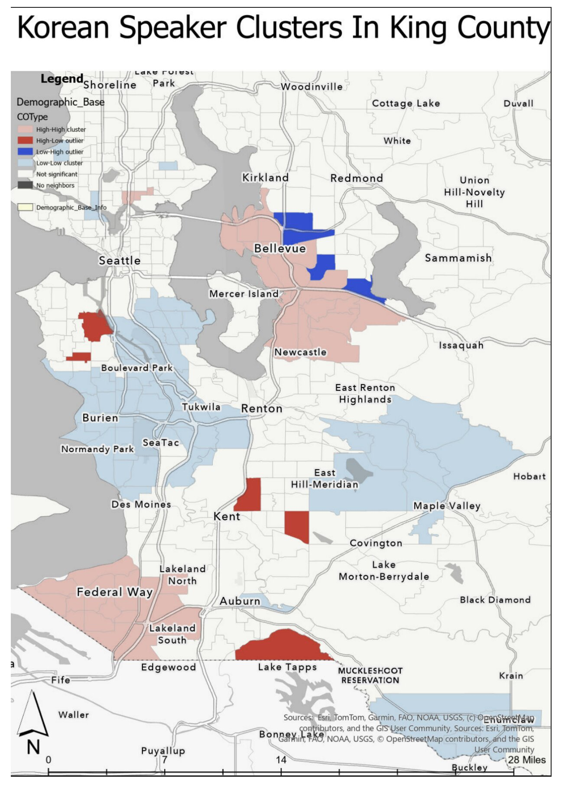

Project 2
Korean Speaking Cluster Map
A spatial statistics study of where Korean speakers live across King County, Washington, and whether those communities are significantly clustered.

Approach
I mapped census tract counts of Korean speakers and normalized them by total population to produce accurate choropleth maps. I then measured spatial clustering with Global Moran's I and Local Moran's I cluster and outlier analysis, comparing contiguity and inverse distance spatial weights to choose the best neighbor definition.
Results
All three groups showed statistically significant clustering, with Moran's I values from 0.41 to 0.55 (p < 0.001). I paired these results with historical research in a written report explaining the community settlement patterns behind them.
The map shows two main high-high clusters, where tracts with many Korean speakers sit next to each other. One covers Bellevue down through Newcastle on the Eastside, and the other covers Federal Way and Lakeland in south King County. Low-low clusters stretch across south Seattle, Burien, Tukwila and SeaTac, and east toward Maple Valley. Scattered high-low outliers near Kent and Lake Tapps mark individual tracts with more Korean speakers than their neighbors.